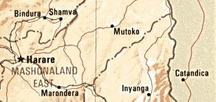
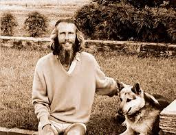
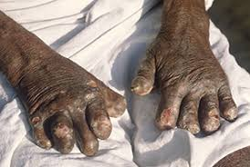
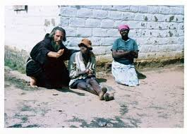
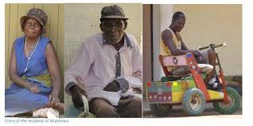
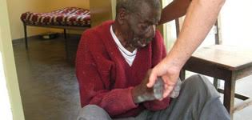

MUTEMWA LEPROSY
Mutemwa Leprosy Settlement is situated in Mashonaland East Province of Zimbabwe in the town of Mutoko, some fifty miles from the border of Mozambique. Mutemwa gets its name from the big 1000 ft rock feature close by. The shona word 'Mutemwa' means 'you are cut off'.
Mount Mutemwa
Mutemwa, in its present situation, started as a leprosarium in about 1937. A few of the patients now resident in Mutemwa were there at the time. It grew into a huge leprosarium in the forties and fifties with nearly 1000 patients. Then with the advent of the drug Dapsone, which can cure the leprosy bacteria, it was decided in 1962 to close Mutemwa and to treat all patients at home. However about 200 patients had no suitable or local homes. Many were from other countries, Malawi, Zambia, Mozambique and Tanzania. They were part of the migrant labour force who came to Rhodesia to seek work on The White farms. Thus Mutemwa had to stay open to care for these patients and others who had no suitable homes to return to. People were still unaware that leprosy could be cured and so some were not welcome at home. One patient said that in her young days leprosy patients were left far away out in the bush to die. Even now in primitive rural areas there is still a fear of leprosy.
Those who were left behind at Mutemwa in 1962 were not looked after. The doctors and nurses had all gone and the Clinic was shut. They were given scant care by the social welfare of the day. This was noticed by the wife of the local Magistrate who went in search of help. She approached the Jesuit Mission Superior and a few friends. A small Committee was formed in 1968 called "The Friends of Mutemwa". In the meantime John Bradburne, who described himself as a strange vagabond of God' found Mutemwa and at once settled there to help in what way he could. John was a layman, member of the Third Order of St Francis.
John Bradburne and a leper The first thing was to give a neglected and rejected people love in the manner of a Mother Teresa of Calcutta. Next, to ensure that they got some food and water and dapsone, the wonder drug. John Bradburne did all that and even attempted to bandage their wounds. In spite of dapsone most patients suffer from suppurating ulcers which have to be cleaned and dressed two or three times a week. The patients by now (1969) had dwindled to eighty and most were very deformed with loss of limbs, noses, and even blindness. Thus they needed considerable care. John got some help from the local Mutoko hospital and in particular from an Italian Mission doctor, Dr Luisa Guidotti, from the nearby All Souls Mission.
One evil which infested Mutemwa during John's days was thieves. It is very easy to steal food and blankets from blind or lame patients. John was always battling with those thieves. Eventually in the liberation war they plotted to kill John to get him out of the way. The patients tried to get John to leave Mutemwa but he refused. Thus he was killed on 5 September 1979, ten years after discovering Mutemwa.
 There were extraordinary happenings after his death which attracted the eye of the Mass Media. Mutemwa slowly became known and help began to come in. A new Committee was formed under the Zimbabwe Leprosy Association. In 1980, just after John Bradburne's death, Brother Lawrence Makonora S.J. volunteered to take care of the Settlement. He was assisted by Sr Caterina Savini who had worked at All Souls Mission with Dr Luisa Guidotti. She soon built a Clinic with help from Italy. After a big fund raising drive the leprosy patients moved from their rat-ridden dismal huts to new housing in 1986.
a leper outside the new housing complex  At present there are forty leprosy patients at Mutemwa, all burnt-out due to the new drugs, but the majority contracted the disease pre-depsone days and so are very deformed. New cases do appear from time to time especially from war-torn Mozambique but the policy is to treat as many as possible at home. The Government gives a monthly per capita grant and medical care, but the patients have to be clothed and provided with supplementary rations and medical needs. All capital development has to be provided via donations. There is also a need for extra qualified staff and staff housing. Mutemwa cares for about twenty destitute handicapped as well. A Mother of Peace Community is developing an AIDS project on adjoining land. The Warden of Mutemwa is a retired African Deacon - the Rev Cyril Kawisi and the Matron is an African SRN Nursing Sister. They refer their problems to the Committee of the Zimbabwe Leprosy Association, an off-shoot of the original "Friends of Mutemwa". The Rev Cyril Kawisi After John Bradburne's death in 1979 his friends slowly formed themselves into a society which could continue help to Mutemwa and honour his memory in some way. Thus in 1987 the John Bradburne Memorial Society (JBMS) was finally registered as a Welfare Organization to raise funds for Mutemwa and to own the land upon which John's hut stands. The JBMS also look after Pilgrims who come to Mutemwa. The JBMS has become one of the main donors to Mutemwa, receiving funds from those who knew John Bradburne or who have a devotion to him. Other benefactors include the late Sally Mugabe, the President's wife, known as the 'Amai' or mother of Mutemwa. She attracted many donors and is greatly missed. Another source of help came from a feature article about John Bradburne and Mutemwa published in the Sunday Telegraph on 23 April 1989. Another article was published on 28 August 1994 in the Review section of the Sunday Telegraph - written by Charles Moore the editor, who made a personal visit to Mutemwa and undertook interviews with people who knew John.
Many pilgrims now come to Mutemwa
 to visit the patients, John Bradburne's hut, and the memorial cross on Chigona rock. There have been claims of answered prayer and cures. Supernatural phenomena have been picked up by camera, video and TV. Perhaps the most striking thing about Mutemwa is the patients themselves. They are so patient and cheerful in their sufferings.
John Bradburne himself wrote of them:
"Mime it I might and hobble lame across some stage Rigged up to tell some philanthropic audience What is true honour and true courage in our age, Heaven forbid that I shall ever get the chance! Dance me down, Fortune - saw I not this very morn Aristrocratic spirits in their smitten frames Go nobly on with living."